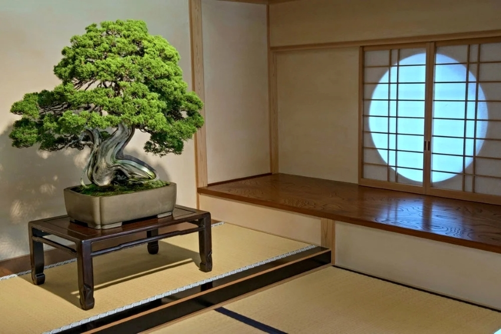

Cultural Influence
Bonsai is deeply rooted in cultural traditions that emphasize balance, simplicity, and respect for nature. Its meaning extends beyond horticulture into philosophy, art, and mindfulness.
Origins & Tradition
Bonsai originated from the Chinese practice of penjing, which focused on miniature landscapes. Over time, Japan refined the practice into what is now recognized as bonsai, emphasizing minimalism, intentional design, and harmony with nature.

Philosophy & Meaning
Bonsai reflects philosophical ideas found in Zen Buddhism and traditional Japanese aesthetics. Concepts such as patience, imperfection, and the passage of time are central to the art. Each tree represents a quiet collaboration between nature and caretaker.
Bonsai Today
In modern culture, bonsai is practiced worldwide as both an art form and a personal discipline. While traditional techniques remain influential, contemporary bonsai artists adapt styles to fit modern lifestyles, climates, and creative expression.
